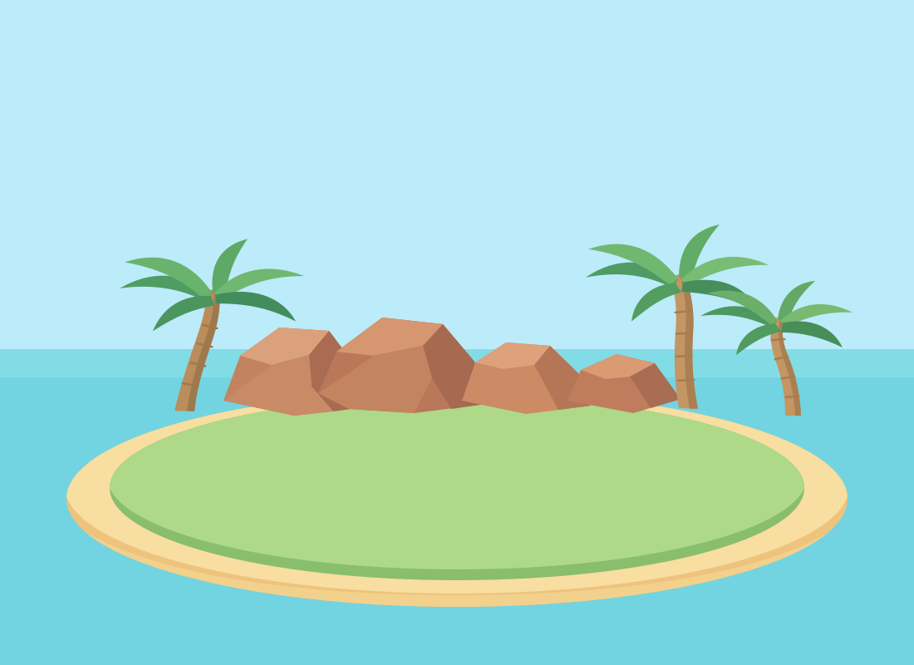

Ⅱ

내 카드 만들기
자기소개 카드
×
필수 항목 작성 후 열림
이름
나의 관심 직무
요즘 나의 가장 큰 도파민은?
0/30
나를 가장 잘 보여주는 스마일메이츠는?
나와 닮은 메이트
메이트 선택
＋
이 메이트의 가치를 잘 보여주는 나의 경험은?
0/80
앞으로 닮아가고 싶은 스마일메이츠는?
닮고 싶은 메이트
메이트 선택
＋
관련해서 최근에 하고 있는 시도가 있다면 적어주세요.
아직 없다면 앞으로 해보고 싶은 일을 적어주어도 좋아요.
0/40
요즘 진로와 관련해 가장 고민되거나 궁금한 점은?
0/60
저장
메이트 선택
×
×
직접 그리기
✎
가는 펜
굵은 펜
되돌리기
모두 지우기
완료
×
❤️ 공감
👏 멋져
🙌 응원
💭 궁금해
수정
이미지 저장
크게 보기
×
휴대폰 접속